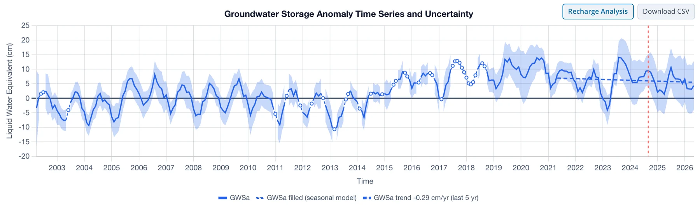
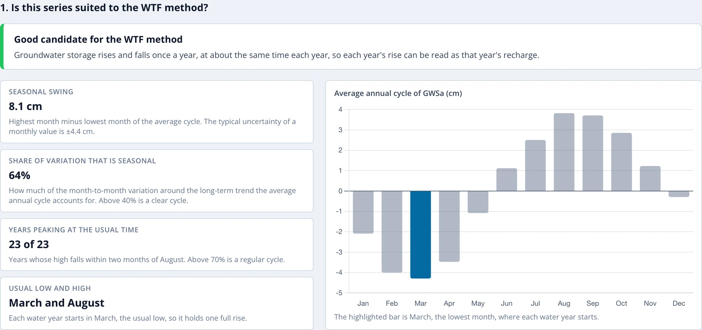

Ouverture de l'Analyse
Le bouton Recharge Analysis
L'analyse de la recharge s'exécute sur la série GWSa comblée ; elle n'est donc disponible que lorsque Gap filling dans le panneau est réglé sur Seasonal model (voir Lacunes dans les Données). Avec cette option, un bouton Recharge Analysis (analyse de la recharge) apparaît à côté de Download CSV au-dessus du graphique de série temporelle, pour une région comme pour une cellule de grille isolée dans la vue globale.

Le bouton ouvre une page plein écran pour la série du graphique. Son en-tête indique la région ou la cellule, et Back to map (ou la touche Échap) ramène à la carte. La page comporte trois sections numérotées :
- une vérification de l'adéquation de la série à la méthode WTF (cette page)
- les années hydrologiques, avec le creux et le pic choisis dans chacune (voir Années Hydrologiques et Choix des Points)
- la recharge de chaque année hydrologique, avec un graphique, un tableau et un téléchargement CSV (voir Résultats)
Les exemples de cette partie utilisent le Northern Midwest Aquifer System, de l'ensemble de régions Global Aquifers : un aquifère situé sous le bassin supérieur du Mississippi, au cycle annuel marqué et régulier. La fonte des neiges et les pluies de printemps le rechargent chaque année, et le stockage diminue de la fin de l'été jusqu'à l'hiver.
Cette série se prête-t-elle à la méthode WTF ?
La méthode interprète la remontée de chaque année hydrologique comme la recharge de cette année, ce qui n'a de sens que si le stockage présente un cycle annuel net (voir Domaine d'application de la méthode). La première section vérifie la présence de ce cycle dans la série avant que vous ne consultiez les valeurs de recharge.

Le verdict affiché en haut est l'un des trois suivants :
| Verdict | Signification |
|---|---|
| Good candidate for the WTF method | Le stockage monte et descend une fois par an, à peu près à la même époque chaque année. |
| Use the results with care | Il existe un cycle annuel, mais il est faible ou irrégulier par rapport aux autres variations du stockage. Vérifiez les points choisis pour chaque année et appuyez-vous sur les moyennes pluriannuelles. |
| Poor candidate for the WTF method | Le cycle annuel régulier est faible, et les estimations de recharge ont peu de chances d'être pertinentes. |
Quatre valeurs affichées en dessous expliquent le verdict :
- Seasonal swing (amplitude saisonnière) : le mois le plus haut moins le mois le plus bas du cycle annuel moyen, en cm, affiché avec l'incertitude médiane ±1σ d'une valeur mensuelle de GWSa. Une amplitude faible par rapport à l'incertitude rend la remontée de chaque année mal mesurée.
- Share of variation that is seasonal (part saisonnière de la variation) : la part de la variation d'un mois à l'autre autour de la tendance à long terme qu'explique le cycle annuel moyen. Seuls les mois observés comptent, car les mois comblés proviennent du même modèle et s'accorderaient avec lui par construction.
- Years peaking at the usual time (années avec pic à l'époque habituelle) : le nombre d'années hydrologiques complètes dont le mois le plus haut (tendance retirée) tombe à deux mois au plus du pic habituel.
- Usual low and high (minimum et maximum habituels) : les mois le plus bas et le plus haut du cycle moyen. Chaque année hydrologique commence au minimum habituel, de sorte qu'elle contienne une remontée complète.
Le verdict combine la deuxième et la troisième valeur :
| Verdict | Part saisonnière | Années avec pic à l'époque habituelle |
|---|---|---|
| Good | au moins 40 % | et au moins 70 % |
| Poor | moins de 10 % | ou moins de 50 % |
| Use with care | toute valeur intermédiaire |
Le graphique à côté des valeurs montre le cycle annuel moyen de GWSa, une barre par mois calendaire, avec le mois le plus bas mis en évidence.
Pour le Northern Midwest Aquifer System, l'amplitude saisonnière est de 8.1 cm pour une incertitude typique de ±4.4 cm, le cycle annuel explique 64 % de la variation, et les 23 années hydrologiques ont toutes leur pic à moins de deux mois d'août. Le stockage est au plus bas en mars ; chaque année hydrologique va donc de mars à février de l'année suivante.
La Vallée Centrale de Californie obtient un verdict différent. Son stockage présente bien un cycle annuel, mais les sécheresses et périodes humides pluriannuelles, ainsi que les pompages intensifs pendant les sécheresses, sont aussi importants que l'amplitude saisonnière :
Un verdict Use the results with care n'arrête pas l'analyse. Lisez le reste de la page avec plus d'attention : vérifiez les points choisis pour chaque année dans l'éditeur, et appuyez-vous sur les moyennes pluriannuelles. Avec un verdict Poor candidate, les remontées annuelles sont surtout du bruit ou des variations pluriannuelles, et les valeurs de recharge ne doivent pas être utilisées.
Si la série est trop courte, ou si un mois calendaire compte trop peu d'observations pour ajuster le modèle saisonnier, la page l'indique et n'affiche aucun résultat.